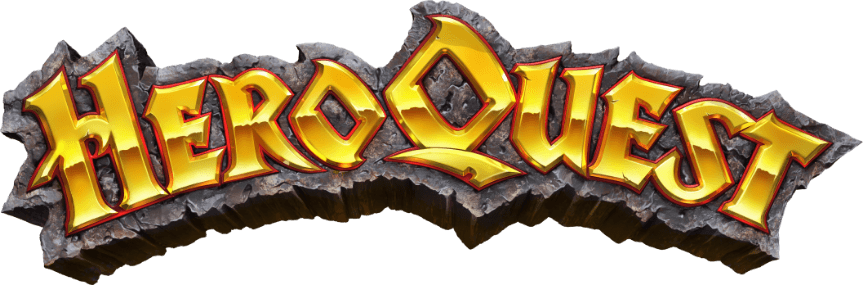

Outdoor
Jeg er et friluftsmenneske, der holder meget af at bruge tid udendørs.
Jeg cykler en del, mest for transportens skyld, men også for min fornøjelse.
Derudover er jeg meget interesseret i at se dyr i deres naturlige habitat.
I den nærmeste fremtid vil jeg gerne have taget jagttegn. Jeg har ingen interesse i at skyde fugle,
men jeg kunne godt tænke mig at jage lidt større vildt.
Jeg drømmer mig herhen:

Mad & drikke
Meget af min fritid går på at tilberede og spise mad.
Da min hustru ikke er den store haj i et køkken falder opgaven ligeligt fordelt mellem mig og Wolt-buddet.
Mine livretter er wienerschnitzel, chili con carne, saag paneer, krebinetter med stuvet kål, og stjerneskud.
Det her er ikke mad. Det er et tilfældigt billede af Bill Murray.
Jeg kan godt lide at lave cocktails. Især har jeg en kærlighed for tiki-drinks.
I løbet af den forgangne sommer har jeg også været begejstret for limoncello-spritz.
Skydning
Jeg har været aktiv sportsskytte siden 2004.
Siden 2009 har jeg fungeret som instruktør for nye skytter, med fokus på våbensikkerhed og almen skydeteknik.
I perioden 2013 til 2021 sad jeg i foreningens bestyrelse, men grundet tidspres fra skolen valgte jeg at trække mig.
Jeg er også en ivrig samler, men dansk lovgivning gør det desværre lidt svært.
Mine primære interesser er for tiden jagtrifler i klassiske safarikalibre, Smith & Wesson-revolvere, og gamle militærrifler fra tiden op til anden verdenskrig.
Litteratur
En af mine store drømme er at udgive en bog en dag.
Jeg holder meget af at læse eskapisme og sci-fi.
Derudover er jeg også meget optaget om at læse om historie og klassiske jagtvåben.
Blandt mine litterære idoler kan nævnes Robert A. Heinlein, Cormac McCarthy, Elmer Keith, Hans Scherfig, Rudyard Kipling,
Jeff Cooper, Hunter S. Thompson, og min gode ven, Jesper Kurt-Nielsen.
Computer- og brætspil
Jeg elsker spil, både med mine venner og alene.
Jeg er fascineret af spillogik og -balancering.
Blandt mine yndlingsgenrer kan nævnes "deckbuilding games" som f.eks. "Clank!" og "Dominion",
og "skirmish games" som "Mordheim", når det kommer til brætspil, samt RTS-spil som Age of Empires og Company of Heroes,
jagtsimulatorere, og middelaldersimulatoren Mount & Blade.
Måske vil jeg gerne lave et spil en dag.